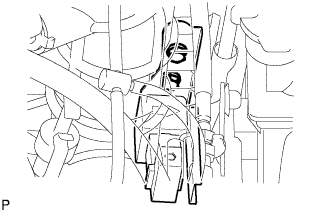

フロント エアバッグ センサ LH 取り付け |
| 1. フロント エアバッグ センサ LH取り付け |
IGスイッチがOFF(LOCK)になっていることを確認する。
バツテリのマイナスターミナルがはずしてあることを確認する。
|  |
フロントエアバツグセンサLHをボルト2本で取り付ける。
フロントエアバッグセンサLHにコネクタを接続する。
フロントエアバッグセンサLHにガタがないことを確認する。
| 2. エア クリーナASSY取り付け |
ボルト4本で、エアクリーナケース W/エアクリーナインレットNo.1およびNo.2を取り付ける。
エアクリーナフィルタエレメントを取り付ける。
エアクリーナキャップ W/エアクリーナホースNo.1を取り付ける。
| 3. バッテリ取り付け |
バッテリトレイを取り付ける。
バッテリを取り付ける。
ボルトおよびナットでバッテリクランプを取り付ける。
| 4. エアバッグウォーニングランプ点検 |
参照)